Վայոց ձորի մարզ, մարզի կարգավիճակ ունեցող վարչատարածքային միավոր Հայաստանի հարավային վերջույթում։ Զբաղեցնում է պատմական Հայաստանի Սյունիք նահանգի նույնանուն գավառի հիմնական տարածքը։ Զբաղեցնելով է 2,308 կմ² տարածք՝ ըստ մեծության 7-րդն է Հայաստանի մարզերի շարքում։ Ընդգրկում է երեք հիմնական աշխարհագրական շրջաններ՝ Արփայի գոգավորություն, Վայքի ծալքաբեկորավոր լեռնաշղթա և Վարդենիսի հրաբխային լեռնավահան։ Հյուսիսում սահմանակցում է Գեղարքունիքի մարզին, հյուսիս-արևելքում՝ Արցախի Շահումյանի շրջանին, հարավ-արևմուտքում՝ Սյունիքի մարզին, հարավային հատվածում՝ Նախիջևանին, իսկ արևմուտքում՝ Արարատի մարզին։ Մայրաքաղաք Երևանին անմիջապես չի հարում։ Վայոց ձորի մարզի վարչական կենտրոնը Եղեգնաձոր համայնքն է (բնակչությունը՝ 7800 մարդ), որը հանդիսանում է նաև մարզի խոշորագույն քաղաքը։ Վարչատարածքային միավորի մյուս քաղաքային բնակավայրերն են Վայքն ու Ջերմուկը։ Վերջինս համարվում է զբոսաշրջային կարևոր նշանակություն ունեցող առողջարանային քաղաք։ Ըստ 2023 թվականի վիճակագրական տվյալների՝ մարզի բնակչությունը կազմում է 48 հազար մարդ, որը ճնշող մեծամասնությունը հայերն են (99% և ավելի)։ Վայոց ձորը համարվում է Հայաստանի ամենաքիչ և ամենանոսր բնակեցված մարզը։ Վայոց ձորը Հայաստանի տնտեսապես ամենաթույլ զարգացած մարզերից մեկն է։ Տնտեսության առաջատար ճյուղը գյուղատնտեսությունը, որի ավանդական ուղղություններից մեկն էլ խաղողագործությունն է։ Ինքնին, Վայոց ձորը հանդիսանում է Հայաստանի խաղողագործական չորս շրջաններից մեկը, որը աչքի է ընկնում գինեգործության հնագույն ավանդույթներով։ «Արենի» տեսակի խաղողից այստեղ պատրաստվում է նույնանուն հանրահայտ գինին։ Վայոց ձորը հայտնի է հարուստ մշակութային ժառանգությամբ և պատմական անցյալով։ Հայաստանի պատմագրության մեջ Վայոց ձորն առաջին անգամ հիշատակվել է պատմահայր Մովսես Խորենացու կողմից՝ ի վկայումս վերջինիս դեռևս հնագույն ժամանակներում հայկական պետական կազմավորումներում ընդգրկվածության։ Թռչունների քարայրում հայտնաբերված կաշվե տրեխը համարվում է մինչ օրս հայտնի ամենահին կոշիկի նմուշն աշխարհում։ Արենիում հայտնաբերվել են նաև գինու կարասների մի ամբողջ շարք։ Վայոց ձորի մարզային տարածքում են գտնվում է նաև միջնադարյան շրջանի Թանահատի վանքը (8-րդ դար), 10-րդ դարին թվագրվող Սմբատաբերդը կամ Ջաղաց Քարի բերդը և վաղմիջնադարյան հայկական ճարտարապետության մարգարիտներից մեկը՝ Նորավանքը։ Այստեղ է տեղակայված նաև միջնադարյան Հայաստանի կարևորագույն ուսումնագիտական կենտրոնը՝ Գլաձորի համալսարանը։
Անվան ստուգաբանություն
Մարզի անվանումը կապված է Մեծ Հայքի Սյունիքի նահանգի համանուն գավառի անվան հետ (քանի որ մարզի ներկայիս սահմանները գրեթե նույնությամբ համընկնում են գավառի տարածքի հետ)[1]։ «Վայոց ձոր»-ը «Վայքի ձոր» տեղանվան գրաբարյան տարբերակն է։ Տեղանվան ծագումնաբանության վերաբերյալ կան բազմաթիվ վարկածներ։ Համաձայն այդ հիպոթեզներից ամենատարածվածի՝ «Վայոց ձոր» նշանակում է «Վշտերի ձոր»։ Այս տարբերակը մեկնաբանությունը կապված է Վայոց գավառի գլխավոր քաղաքում՝ Մոզում 735 թվականին տեղի ունեցած ավերիչ երկրաշարժի հետ, որի ժամանակ զոհվում է շուրջ 10 հազար մարդ։ Կիրակոս Գանձակեցին և Ստեփանոս Օրբելյանը գավառի Վայոց ձոր անվանումը կապում է հայերեն «վայ» բառի հետ։ Այնուամենայնիվ, այս տարբերակը համարվում է ոչ ճիշտ, քանի որ «Վայոց ձոր» տեղանվան հիշատակումներ եղել են Մոզի երկրաշարժից առնվազն 300 տարի առաջ։ 5-րդ դարի պատմիչ Եղիշեն հիշատակում է կաթողիկոս Հովսեփ Վայոցձորցուն, Մովսես Խորենացին նույն անձի մասին գրում է «քահանայապետն Վայոց ձորի Հողոցիմ գյուղից» և այլն[2][3][4]։ Ժամանակակից ուսումնասիրողները առաջ են քաշում մեկ այլ վարկած, համաձայն որի Վայոց ձոր գավառի անվանումը կապված է Վանի թագավորության տարածքում բնակված «վայ» ցեղի կամ դիցանվան հետ։ Չի բացառվում նաև, որ այն կարող է կապված լինել որևէ աշխարհագրական օբյեկտի հետ։
Պատմություն
Վայոց ձորի մարզը զբաղեցնում է պատմական Հայաստանի Սյունյաց նահանգի նույնանուն գավառի հիմնական տարածքը։ Ինչպես Վայոց ձորի, այնպես էլ նրանում գտնվող մի շարք բնակավայրերի մասին հայկական և օտարալեզու սկզբնաղբյուրներում կան բազմաթիվ հիշատակություններ և վկայություններ։
Նախապատմական շրջան և վաղ ժամանակներ
Վայոց ձորը հայոց պատմության մեջ առաջին անգամ հիշատակվում է Մովսես Խորենացու կողմից՝ նկատի ունենալով Վարդանանց պատերազմի ժամանակահատվածում հայ առաքելական եկեղեցին առաջնորդած Հովսեփ Վայոցձորցի կաթողիկոսի ծննդավայրը։ Այնուամենայնիվ, հնագիտական պեղումների արդյունքում այստեղ հայտնաբերվել են բազմաթիվ գտածոներ, որոնք թվագրվում են պալեոլիթյան և բրոնզեդարյան ժամանակաշրջաններին։ Հայտնաբերվել են նաև որսորդության տեսարաններ պարունակող ժայռաքանդակներ[5]։ Այս ամենով պայմանավորված պատմաբանները եկել են այն եզրահանգման, որ Վայոց ձորը բնակեցված է եղել դեռևս նախապատմական ժամանակներում։ 2007-2011 թվականներին իրականացված պեղումների ընթացքում Արենիի նախնադարյան քարանձավում հայտնաբերվել է գինեգործությանը վերաբերող գտածոներ (գինու խմորման գուռեր, մզարան, պահեստային սափորներ)[6][7]։ Ներկայումս այդ գինեգործական համալիրը համարվում է աշխարհում հնագույնը և թվագրվում է մ.թ.ա. 4-րդ հազարամյակին[6][8]։ Քարանձավի ներսում մարդիկ չեն բնակվել, իսկ գինու սպառումը նրանց համար կրել է ծիսական բնույթ։ Արենիի քարանձավի խորքում, սննդի պահպանության տարաների կողքին, հայտանբերվել են կավե ամանների մեջ թաղված երեխաների և մեծերի աճյուններ, որնք բավականին լավ են պահպանվել։ Երեք գանգ պատկանել է դեռահաս աղջիկների, որոնք մահացել են 5,9-6,2 հազար տարի առաջ։ 2008 թվականին նույն քարանձավում հայտնաբերվել է աշխարհում ամենահին՝ ավելի քան 5500 տարեկան կաշվե կոշիկը[9][10][11]։
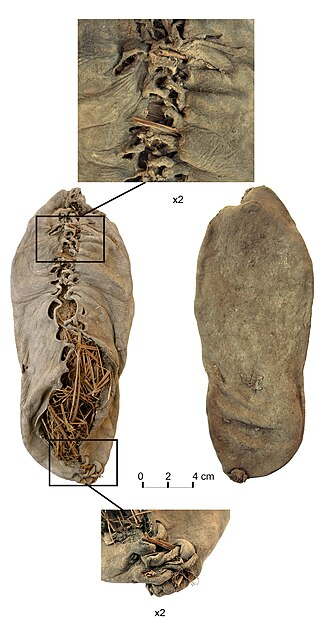
Արենիի քարանձավից հայտնաբերված 5500-ամյա կաշվե ոտնամանը։
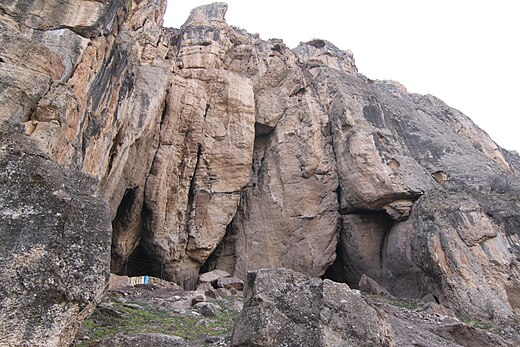
«Թռչունների քարանձավ» անունով հայտնի Արենիի քարայրը, որտեղ հայտնաբերվել են աշխարհում ամենահին գինեգործական իրերը և ոտնամանը։
Միջնադարյան ժամանակաշրջան
Վայոց ձորը մեծ ծաղկում է ապրում միջնադարյան ժամանակահատվածում։ 885 թվականին այն անցնում է Հայաստանի անկախությունը վերականգնած Բագրատունիներին, ապա՝ Սյունիքի ենթակա թագավորությանը (Սյունիների ազնվականական տոհմին)[14]։ Վայոց ձորի վերազարթոնքը կապված էր հետագայում այս տարածքները կառավարող Զաքարյան, Պռոշյան և Օրբելյան իշխանությունների անվան հետ։ Զարգացած միջնադարում այստեղ կառուցվում են բազմաթիվ եկեղեցիներ, վանական համալիրներ, պաշտպանական ամրություններ, կամուրջներ և քարավանատներ։ Հոգևոր կառույցներից նշանավոր են Թանահատի վանքը, Ցաղաց քար եկեղեցին (Աստվածածնի անապատ), Գնդեվանքը, Սպիտակավոր վանքը և Նորավանքի համալիրը[14]։ Ըստ պատմիչ Ստեփանոս արքեպիսկոպես Օրբելյանի, 735 թվականին Թանադե վանքում ամփոփվել է Ստեփանոս Սյունեցու դին և գերեզմանի վրա փոքրիկ մատուռ կառուցել։
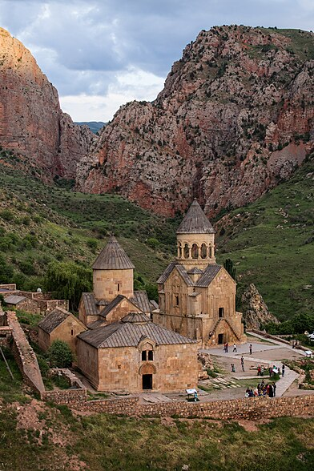
Նորավանք վանքային համալիրը՝ հարևան բնաշխարհի համայնապատկերում։
1273-1279 թվականներին մատուռի տեղում, Պռոշ իշխանի և նրա ընտանիքի հովանավորությամբ, շրջակայքի բնակիչների ուժերով մուգ կապտավուն բազալտի սրբատաշ քարերով կառուցվել է ներքուստ խաչաձև, չորս անկյուններում ավանդատներով (արևելյան կողմինները՝ երկհարկ), արտաքուստ ուղղանկյուն, գմբեթավոր հորինվածքով Թանադե վանքը[15]։ Նույն սկզբնաղբյուրի հավաստմամբ 13-14-րդ դարում այստեղ կառուցվել է նաև Նորավանքի համալիրը՝ հայ միջնադարյան ճարտարապետության մարգարիտներից մեկը[16]։ Նորավանքի պատմությունը կապված է ժամանակաշրջանի հայտնի եկեղեցական և քաղաքական գործիչների անունների հետ։ Նորավանքում են ապրել, ստեղծագործել և այստեղ են թաղված միջնադարյան Հայաստանի մի շարք նշանավոր գործիչներ ու ստեղծագործողներ։ Ըստ էության, Նորավանքի վանքային համալիրը հիմնադրել է Վահանավանքի վանահայր Հովհաննես եպիսկոպոսը, որը 1105 թվականին այստեղ հաստատվելով` ընդարձակել է վանքապատկան տարածքները, հավաքել ճգնակյաց վանականների, սելջուկ տիրակալներից հրամանագրեր վերցրել Նորավանքը եպիսկոպոսանիստ ճանաչելու վերաբերյալ[16]։ Հաջորդ երկու դարերի ընթացքում Նորավանքն ընդլայնվել է` շնորհիվ Սյունյաց աշխարհում իշխող Օրբելյան իշխանների եկեղեցանպաստ գործունեության, ու դարձել հոգևոր, կրթական ու մշակութային կենտրոն և Օրբելյանների տոհմական գերեզմանատունը։
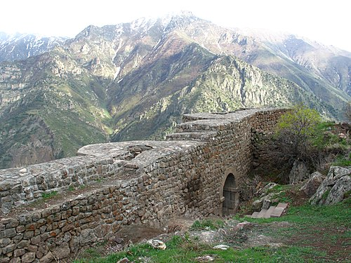
Սմբատաբերդը 10-րդ դարի ամրոց է Վայոց ձորի Արտաբույնք բնակավայրում։
Վայոց ձորում (Արտաբույնք բնակավայրի (հնում՝ Եղեգիս) շրջակայքում) մինչ օրս պահպանվել է 10-րդ դարում Սյունիքի Սմբատ Ա Սյունի իշխանի կողմից հիմնադրված Սմբատաբերդի բրգավոր պարիսպները[17]։ Միջնադարյան պաշտպանական ամրություններից հայտնի են նաև Պռոշաբերդը[18], Էրթիջի ամրոցը և Սուլեմա բերդը[19]։ Զաքարյանների իշխանապետության օրոք՝ 13-14-րդ դարերում, Աղբերց վանքի հարևանությամբ գործում է Գլաձորի համալսարանը[20], որը կարճ ժամանակահատվածում դառնում է միջնադարյան Հայաստանի հոգևոր, գիտական և հասարակական կենտրոններից մեկը։ Այստեղ են կրթություն ստանում և գործում այդ ժամանակի անվանի հայ մտավորականներ Ներսես Մշեցին, Եսայի Նչեցին, Մխիթար Սասնեցին, Հովհաննես Որոտնեցին, Խաչատուր Կեչառեցին, Թորոս Տարոնացին, Ավագը, Մոմիկը և այլք։ Վայոց ձորի նշանավոր բնակավայրերից է Ագարակաձորը, որը նախկինում անվանվել է Ագյար։ Ագյարը պատմականորեն եղել է Օրբելյան իշխանների տոհմական կալվածքը։ Զարգացած միջնադարի ժամանակահատվածում այն համարվում էր Վայոց ձորի ամենածաղկուն շրջանը։ Տնտեսական կյանքի և առևտրի զարգացման համար մեծ մշանակություն տալով ճանապարհաշինությանը, Տարսայիճ Օրբելյանը (13-րդ դար) այստեղ կառուցում է մի քանի քարավանատներ և կամուրջներ, այդ թվում նաև Ագարակաձորի կամուրջը, որը կանգուն է և գործում է մինչ այսօր։ 13-րդ դարում Ստեփանո Օրբելյանն իր «Պատմութիւն տանն Սիսական» աշխատությունում հիշատակում է Վայոց ձոր գավառի 94 բնակավայրերի անունները։ Միջնադարում Վայոց ձորի տարածքով է անցել «Մետաքսի մեծ ճանապարհը», որով այսօր անցնում է Մարտունի-Եղեգնաձոր խճուղին։ 1332 թվականին Չեսար Օրբելյանը Սուլեմայի լեռնանցքում հիմնադրում է Սելիմի իջևանատունը, որը մասամբ կանգուն է մինչ օրս։ Վարդենյաց լեռնանցքում գտնվող 14-րդ դարի այս քարավանատունը, ի թիվս նման մի շարք այլ շինությունների, որպես իջևանատուն ժամանակին ծառայել է Մետաքսի ճանապարհի հայաստանյան մասով անցնող առևտրականների համար[21]։ Հայտնի է, որ նշանավոր ճանապարհորդ Մարկո Պոլոն անցել է այս տարածքով և նկարագրել, թե ինչպես են հայերն ապրում դժվարանցանելի լեռների մեջ։
Նոր շրջանից մինչև մեր օրեր
15-18-րդ դարերի միջև ընկած ժամանակահատվածը համարվում է Վայոց ձորի լճացման ժամանակաշրջանը։ Այս տարիներին Հայաստանի տարածքը ենթարկվում է թյուրքական ցեղերի ասպատակություններին, որի արդյունքում ավերվում են Վայոց ձորի բնակավայրերը, իսկ տեղի հայկական բնակչությունը պարբերաբար ենթարկվում տեղահանությունների և կոտորածի։ Նվաճողները հայ քրիստոնյա բնակչությանը ճնշում են հարկային ծանր քաղաքականությամբ։ Ավելի ուշ՝ 18-րդ դարում, Վայոց ձորը տուժում է թուրք-պարսկական հակամարտության պատճառով։ Ռուս-պարսկական 1826-1828 թվականների պատերազմի արդյունքում կնքված Թուրքմենչայի հաշտության պայմանագրով Արևելյան Հայաստանը (այդ թվում՝ Վայոց ձոր գավառի տարածքը) անցնում է Ռուսական կայսրությանը՝ սկզբում միավորվելով Հայկական մարզի, ապա՝ Երևանի նահանգի Շարուր-Ղարալագյազի գավառի կազմում։
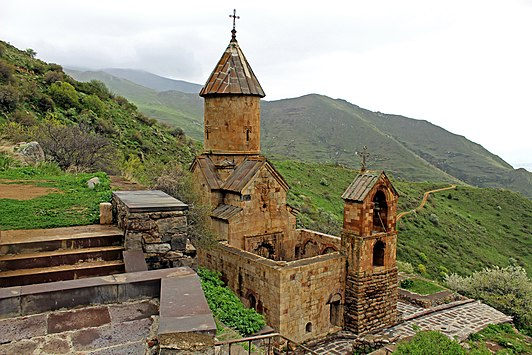
Սպիտակավոր Սուրբ Աստվածածին վանքը Վերնաշենի շրջակայքում։ Վանքի տարածքում է թաղված Լեռնահայաստանի հիմնադիր Գարեգին Նժդեհը։
1918 թվականին Վայոց ձորի տարածքն անցնում է նորանկախ Հայաստանի ժողովրդավարական հանրապետությանը՝ ներառվելով Սյունիքի նահանգի մեջ։ 1920 թվականին կարմիր բանակի կողմից Հայաստանի բռնազավթումից և խորհրդային կարգերի հաստատումից հետո տարածաշրջանն անցնում է Հայկական ԽՍՀ-ին։ Հայաստանի խորհրդայնացումից անմիջապես հետո՝ 1920 թվականի դեկտեմբերի 25-ին, սպարապետ Գարեգին Նժդեհի նախաձեռնությամբ Տաթևի վանքում հրավիրվում է համազանգեզուրյան առաջին համագումարը, որի արդյունքում հռչակվում է Լեռնահայաստանի հանրապետությունը։ Վայոց ձորի ներկայիս տարածքի մեծ մասը ևս մտնում է Նժդեհյան հանրապետության կազմի մեջ։ Այնուամենայնիվ, բոլշևիկների ճնշումների ներքո Նժդեհը թողնում է Սյունիքն ու Հայաստանի սահմանները՝ երաշխավորված լինելով, որ տարածաշրջանը մնալու է ՀԽՍՀ-ին։ 1929-1930 թվականի ռեֆորմների արդյունքում նախկին Վայոց ձորի գավառի տարածքում ձևավորվում են Խորհրդային Հայաստանի Եղեգնաձորի և Ազիզբեկովի (Վայքի) շրջանները։ Արցախյան շարժման և պատերազմի սկզբից հայ-ադրբեջանական սահմանի երկարությամբ (130 կմ) գտնվող վայոցձորյան բնակավայրերը պարբերաբար ենթարկվում են հարձակումների և հրթիռակոծությունների։ Իրավիճակի բարդությունը կայանում էր նրանում, որ մարզում զգալի թիվ էին կազմում ադրբեջանաբնակ և խառը բնակչությամբ գյուղերը։ 1989 թվականի մարտ-ապրիլ ամիսներին ավելի հաճախակի են դառնում ազգամիջյան բախումները և միջադեպերը։ Հետագա բախումները կանխելու նպատակով Եղեգնաձորի և Վայքի շրջանների ղեկավարությունը կազմակերպում է ադրբեջանցիների ապահով տեղափոխությունը Նախիջևան։ 1991 թվականին Վայոց ձորը մտնում է նորանկախ Հայաստանի կազմի մեջ։ 1995 թվականի բարեփոխումների արդյունքում որպես առանձին վարչատարածքային միավոր ձևավորվում է Վայոց ձորի մարզը։
Աշխարհագրական դիրք և բնական պայմաններ
Վայոց ձորի մարզը գտնվում է Հայաստանի հարավ-արևելքում՝ Արփա գետի ավազանում, և շրջապատված է Զանգեզուրի լեռնաշղթայի հյուսիսային հատվածով։ Սահմանակցում է է Հայաստանի մարզերից Արարատին, Գեղարքունիքին, Սյունիքին, ինչպես նաև Արցախի Հանրապետությանը և Ադրբեջանի էքսկլավ Նախիջևանի ԻՀ-ին[22]։ Վայոց ձորը հարևան մարզերից տարանջատված է տարածքի մակերևույթի առանձնահատկությամբ։ Վայոց ձորի գոգավոր տարածքը՝ շրջապատված բարձրադիր լեռներով և ջրբաժան լեռնաշղթաներով, այն դարձնում է աշխարհագրական մեկ ամբողջություն։ Բնական գործընթացների արդյունքում այս տեղանքում առաջացել են բազմաթիվ լեռնաշղթաներ, ձորեր, լեռնանցքներ, սարահարթեր, գոգավորություններ, դաշտեր, մարգագետիններ և բնական բազմապիսի կերտվածքներ, որոնք առավել բազմազան են դարձնում Վայոց ձորի բնապատկերը։ Մարզի տարածքը գտնվում է Հայաստանի բարձրադիր հատվածում։

Բարձրալեռնային տեսարան Վարդենյաց (Սելիմի) լեռնանցքի վայոցձորյան հատվածից՝ մինչև 2410 մետր բարձրության վրա։
Լեռնագրական առումով Վայոց ձորի տարածաշրջանը ներառված է հարավային լեռնաշղթաների և միջլեռնային գոգավորությունների աշխարհագրական մարզի մեջ։ Ծովի մակարդակից բարձրությունը այստեղ տատանվում է 850 մետրից (Արենի) մինչև 3522 մետր։ Մարզի ամենաբարձր կետը Փոքր Կովկասի լեռնաշղթայի մաս կազմող Վարդենիս լեռն է (3522 մետր), որը գտնվում է Վայոց ձորի և Գեղարքունիքի սահմանագլխին։ Համեմատաբար բարձր լեռնագագաթներ են նաև Գոգին (3120 մետր), Ամուլսարը (2987 մետր), Գնդասարը (2946 մետր) և Վայոցսարը (2581 մ)։ Վայոց ձորի մարզի աշխարհագրական դիրքավորմանը բնորոշ են լանդլաֆտի բազմազանությունն ու ռելիեֆի գոտիականությունը։ Արևմուտքից Վայոց ձորի լեռնաշղթաները, աստիճանաբար ցածրանալով, հասնում են Շարուրի դաշտ։ Մարզը հյուսիսից շրջապատված է Վարդենիսի լեռնաշղթայով։ Վայոց ձորի տարածքն ընդգրկում է երեք խոշոր աշխարհագրական ենթաշրջաններ․ Արփայի գոգավորություն, Վայքի ծալքաբեկորավոր լեռնաշղթա, Վարդենիսի հրաբխային լեռնավահան։ Ինչպես Վայոց ձորը, այնպես էլ ողջ հարավային Հայաստանը գտնվում են գեոսինկլինալային գոտում (աշխարհագրական գոտի, որտեղ չեն ավարտվել լեռնակազմական գործընթացները), ուստի այստեղ հնարավոր երևույթներ են երկրակեղևի սաստիկ ցնցումները։ Այս ամենի մասին վկայում է 735 թվականի Մոզի ավերիչ երկրաշարժը։ Գերակշռում են պալեոգենի և ստորին նեոգենի նստվածքային և նստվածքահրաբխային ապարաշերտերը։ Բնական հիմնական լանդլաֆտները կիսաանապատներն ու տափաստաններն են։ Տիրապետում են լեռնաշագանակագույն և մարգագետնատափաստանային հողերը։ Մարզի տարածքում հատնաբերվել են պղնձի, տուֆի, մարմարի, կրաքարի, կավի, բազալտի, գրանիտի, ֆելզիտի (Մարտիրոսի ֆելզիտը) և հանքային ջրերի մեծ պաշարներ։ Մետաղական նշանակության պաշարները դեռ չեն շահագործվել։
Վայոց ձորի բնությունը
Ջերմուկի ջրաբանական արգելավայր բնության հատուկ պահպանվող տարածք է Արփա գետի վերին ավազանում, 2000-2500 մ բարձրություններում։ Ստեղծվել է հանքային ջրերի տաք աղբյուրների («Ջերմուկ» հանքային ջուր) սնման ավազանների պահպանության նպատակով։
Փառակատար լեռնագագաթ Փառակատար լեռը գտնվում է Վայոց Ձորում` ծովի մակարդակից մինչև 2528 մ հարաբերական միջին բարձրության վրա։ Լեռան գագաթից բացվում է տեսարան դեպի Վայքի, Զանգեզուրի լեռներ, Որոտանի լեռնանցք և Արտավանի լիճ։
Ջերմուկի ջրվեժ Բնության ջրաերկրաբանական հուշարձան է Ջերմուկ քաղաքում՝ Արփա գետի աջակողմյան վտակի վրա։ Սկզբնավորվում է աղբյուրներից, մոտ 68 մ բարձրությունից 3 գմբեթաձև դարավանդներով թափվում Արփա գետ։
Ջրագրական ցանց
Վայոց ձորի ջրագրական ցանցը բավականին խիտ է։ Մարզի ողջ տարածքով հոսում է Արփա գետը՝ իր Դարբ, Կապույտը, Գնիշիկ, Գրավ, Եղեգիս, Հերհեր, Մալիշկա, Ելփին և այլ վտակներով։ Այն սկիզբ է առնում Արցախի բարձրավանդակի հյուսիս արևմուտքից` 3200 մ բարձությունից, և թափվում Արաքս գետը՝ Նախիջևանի և Թուրքիայի սահմանի վրա։ Վայոց ձորի բոլոր գետերն ու գետակները սրընթաց են, արագահոս, ունեն մեծ անկում ու թեքություն և հարուստ են էներգետիկ պաշարներով։ Արփայի վտակները տեղ-տեղ առաջացնում են նաև սահանքներ և ջրվեժներ։ Նշանավոր է բնության հուշարձանի կարգավիճակ ունեցող Ջերմուկի ջրվեժը (Ջրահարսի ջրվեժը)։ Գետերի մեծ մասը սելավաբեր է, ուստի՝ վերջինիս ափերին կառուցվել են հակասելավային, քարալիցքային ցանցարկղերով ափապաշտպան հենապատեր[27]։
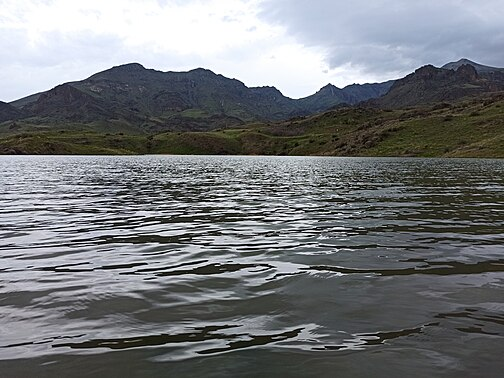
Բարձրադիր Եղեգնալիճը Ռինդ գյուղի տարածքում։ Լճի ջուրն օգտագործվում է ոռոգման և ձկնորսական նպատակներով։
Արփայի ջրերի մի մասը Սևանա լիճ փոխադրելու նպատակով կառուցվել է 48.3 կմ երկարություն ունեցող Արփա-Սևան ջրատար թունելը, որը սկիզբ է առնում Կեչուտի ջրամբարից։ Արփայի ամենամեծ վտակը Եղեգիսն է, որը սկիզբ է առնում Վարդենիս լեռան հարավային լանջերից։ Եղեգիսի ջրերի մի մասը տեղափոխվում է Որոտան-Արփա-Սևան ջրատար։ Գետամերձ հատվածում է գործում Եղեգնաձորի ջրէկ-ը։ Թեքսարի լեռնաշղթայի հյուսիսարևելյան լանջերից՝ 3040 մ բարձրությունից սկզբնավորվում է Արփայի մեկ այլ խոշոր աջակողմյան վտակ՝ Հերհերը։ Գետի վրա կառուցված է ջրամբար։ Վայոց ձորի մարզային տարածքում են գտնվում Կեչուտի, Աղավնաձորի, Քարագլխի, Հերհերիի ջրամբարները, Գնդեվազի, Մալիշկա-Եղեգնաձորի ջրանցքները, Որոտան-Արփա-Սևան ջրատարի զգալի մասը։ Այս տարածաշրջանը աչքի է ընկնում նաև փոքր լճակների մեծ քանակությամբ, որոնց մի մասը ամռան տապին ցամաքում է։ Արփա գետի ավազանը հարուստ է նաև բազմաթիվ սառնորակ աղբյուրներով, որոնցից որոշների շրջակայքը ծառայում է որպես հանգստի գոտի։
Կլիմա
Վայոց ձորի մարզի կլիման գլխավորապես պայմանավորված է վերընթաց գոտիականությամբ, ըստ բարձրության՝ տաք չոր ցամաքայինից մինչև ձյունամերձ։ Ընդհանուր հաշվով, այս մարզի կլիմայական պայմանները աչքի են ընկնում չորությամբ և ցամաքայնությամբ, ինչպես նաև ցուրտ կամ չափավոր ցուրտ ձմեռներով և շոգ կամ տաք ամառներով[23]։ Ըստ Հայաստանի արտակարգ իրավիճակների նախարարության «Հիդրոօդերևութաբանության և մթնոլորտային երևույթների վրա ակտիվ ներգործության ծառայություն» ՊՈԱԿ-ի տրամադրած տեղեկատվության՝ օդի միջին ջերմաստիճանը Վայոց ձորի լեռնային շրջաններում հասնում է առավելագույնը մինչև +0.5, իսկ նախալեռներում +8.7ºC-ի[24]։ Տարվա ամենատաք ամիսը հուլիսն է, իսկ ամենացուրտը՝ հունվարը։ Ձմեռային ամիսներին օրվա միջին ջերմաստիճանի նվազագույն շեմը -4 °C-ն է, իսկ ամռանը՝ հուլիս-օգոստոս ամիսներին, առավելագույն ջերմաստիճանը չի գերազանցում +26°C-ը։ Ամռան ամիսներին օրվա միջին ջերմաստիճանը տատանվում է +15-ից մինչև +26ºC։ Օդի հարաբերական խոնավությունն առավելագույնը դիտվում է հունվար ամսին` 67-75%, իսկ նվազագույնը` օգոստոսին (39-62%)։ Տարեկան տեղումների քանակը ըստ բարձրության տատանվում է 300-800 մմ։ Արևափայլքի ժամային տևողության ցուցանիշով Վայոց ձորը առաջատար դիրք է զբաղեցնում Հայաստանի մարզերի ցանկում։ Տարվա օրերի ճնշող մեծամասնությունը արևոտ են (անարև են 365 օրերից միայն 30-40-ը)[25]։
Բուսական և կենդանական աշխարհ
Վայոց ձորի մարզի հողաբուսային ծածկույթն ու կենդանական աշխարհը բազմազան են և գլխավորապես պայմանավորված են վերընթաց լանդշաֆտային գոտիականությամբ։ Այսպիսով, մարզի տարածաշրջանները աչքի են ընկնում կենսաբազմազանության տարբեր տեղաբաշխվածություններում։ Օրինակ Վայքի ֆիզիկաաշխարհագրական շրջանում իրար են հաջորդում լանդշաֆտային երեք հարկեր, ցածրադիր հարկում կիսաանապատային և չոր տափաստանային լանդշաֆտներն են, որոնք տարածվում են 1200 մետրից (Արփա գետի մերձհունային մասը՝ մինչև Մալիշկա) մինչև 1700 մետր (Ռինդի, Աղավնաձորի, Ազատեկի, Գլաձորի սարավանդները) բարձրություններում։ Միջնամասում (մինչև 2300 մ) գերիշխում են լեռնատափաստանային, լեռնաանտառային (Ջերմուկ առողջարանի շրջանում, Դարբի, Եղեգիսի և Սուլեմայի հովիտներում) և մարգագետնատափաստանային լանդշաֆտները։
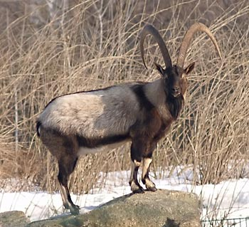
Բեզոարյան այծը Վայոց ձորի լեռնային ֆաունայի բնորոշ ներկայացուցիչներից է։
Բնական պայմանների բազմազանությամբ պայմանավորված համեմատականորեն հարուստ է մարզի կենդանական աշխարհը։ Վայոց ձորն իր տեղադիրքով Միջերկրածովյան կենսաշխարհագրական տարածաշրջանի, Իրանական, Փոքրասիական ու Պոնտոս-կովկասյան կենսաբազմազանության մարզերի խաչմերուկ է։ Այստեղ տարածված են Հայաստանում գրանցված 460 տեսակի կենդանիներից 225-ը։ Դրանցից են բեզոարյան այծը, հայկական լեռնային ոչխարը (մուֆլոն), վայրի խոզը, գորշ արջը, աղվեսը, գայլը, նապաստակը, թռչուններից՝ սովորական լորը, քարակաքավը, անգղները, արծիվները, ձկնատեսակներից՝ կարմրախայտը, բեղլուն, կողակը։ Հաճախակի հանդիպում են ինչպես թունավոր, այնպես էլ անվտանգ օձեր, որոնցից ամենանշանավորը լեռներում բնակվող հայկական իժն է, որը գրանցված է Հայաստանի կենդանիների «Կարմիր գրքում»։
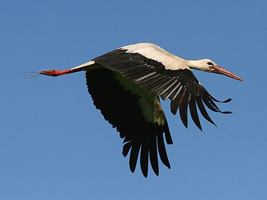
Սպիտակ արագիլը Վայոց ձորի ցածրալեռնային շրջաններում հաճախ հանդիպող թռչուններից է։
Վայոց ձորի մարզի բուսական աշխարհի տեսակային կազմը հարուստ է։ Այստեղ հաշվվում է գրեթե 1650 բուսատեսակ, որոնցից 1500 տեսակը խոտաբույսեր են, որոնց մեջ գերակշռում են դեղաբույսերը։ Մարզն աղքատ է անտառներով․ մասնավորապես, անտառածածկ է Վայոց ձորի մարզի շուրջ 3700 հեկտարը, որը կազմում է ողջ երկրամասի տարածքի ընդամենը 1,6%-ը։ Այնուամենայնիվ, անտառներում աճող 150 ծառատեսակները մեծամասամբ արժեքավոր են՝ հազվագյուտ և էնդեմիկ տեսակներ են։ Դրանց մեջ կան հատուկ պահպանվող տարածքներ` Հերհերի գիհու նոսարանտառային և Ջերմուկի անտառային արգելավայրերը։ Վայոց ձորի մարզում աճում են ծիրանի, բալի, տանձի, դեղձի, խնձորի, խաղողի, սալորի, սերկևիլի, փշատի, ընկույզի բազմաթիվ տեսակներ, բազմաթիվ հատապտուղներ։ Ինչպես ֆլորայի (բուսական աշխարհ), այնպես էլ ֆաունայի (կենդանական աշխարհ) շատ տեսակներ գտնվում են վերացման եզրին կամ ուղղակի վտանգված են՝ այդկերպ գրանցված լինելով Հայաստանի «Կարմիր գրքում»։ Բնության պահպանության նպատակով մարզում ստեղծվել են արգելավայրեր։
Բնապահպանություն
Վայոց ձորի բնապահպանական հիմնախնդիրները ունեն համապետական նշանակություն։ Մարզի էկոլոգիական ծրագրերի հիմնական ուղղություններն են համարվում անտառների վերականգնումը, վերարտադրությունը, անտառային ռեսուրսների պահպանությունը և կայուն օգտագործումը, հողերի դեգրադացիայի կանխումը, անապատացմանը նպաստող մարդածին գործոնների նվազեցումը, բնական կերահանդակների կայուն կառավարումը, կենսաբազմազանության պահպանությունը, ջրային ռեսուրսների արդյունավետ կառավարումն ու օգտագործումը, ինչպես նաև արդյունաբերական թափոնների և կենցաղային աղբի հեռացումը[25]։ Վայոց ձորի մարզում գոյություն ունեցող բնության հատուկ պահպանվող տարածքները 2013 թվականի հողային հաշվեկշռով կազմում է 18169.5 հա[25]։ Դրանք են Ջերմուկի ջրաբանական արգելավայրը, Ջերմուկի անտառային արգելավայրը, Հերհերի նոսրանտառային արգելավայրը և Եղեգնաձորի պետական արգելավայրը։ Վայոց ձորում հաշվվում են շուրջ 54 բնության հուշարձանների։ 2010 թվականից ի վեր Արփա գետի ավազանի ձախափնյա մասը կազմող Վայոց ձորի լեռնաշղթայի հյուսիս-արևմտյան հատվածում գործում է «Գնիշիկ» հատուկ պահպանվող տարածքը («Գնիշիկ» պահպանվող լանդշաֆտ)[28]։
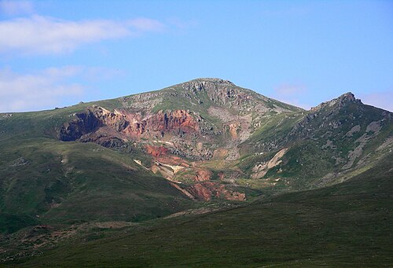
Ամուլսար լեռը՝ 2987 մետր բարձրությամբ։ Լեռն ընդգրկված է համանուն ոսկու հանքավայրի տարածքում, որի շահագործման դեմ շարունակաբար պայքարում են բնապահպանական մի շարք խմբեր։
Բնության հատուկ պահպանվող տարածքների ստեղծման հիմնանպատակը հանքային ջրերի տաք աղբյուրների սնման ավազանների, ռելիկտային գիհու և խոշոր առեջ կաղնու լեռնային անտառների, կենդանական աշխարհի և այլ արժեքավոր համակարգերի առավել արդյունավետ պահպանությունն է։ Մարզի գրեթե բոլոր էկոհամակարգերը ենթարկվում են մարդու ուղղակի կամ անուղղակի ազդեցությանը, որի արդյունքում էական վնասներ է կրում տարածաշրջանի բուսական և կենդանական աշխարհը՝ ինչպես և ողջ բնական միջավայրը։

Ջերմուկի կիրճն ու անտառները անտառային արգելավայրի տարածքում՝ աշնանային եղանակին։
Մարդու տնտեսական գործունեությունը և դրա վնասակար հետևանքները առավել ակնառու և նկատելի են անտառային ու ջրային էկոհամակարգերի վրա։ Այդօրինակ դեպքերից առանձնահատուկ հնչեղություն է ստացել Ամուլսարի ճգնաժամն ու տեղի ոսկու հանքավայրի շահագործման դեմ պայքարը, որը ընթանում է 2018 թվականից ի վեր։ Ամուլսարի հանքավայրի շինարարության ընթացքում մի քանի անգամ վնասվել է մոտակա բնակավայրերի (Ջերմուկ, Գնդեվազ) խմելու ջրի խողովակը, աղտոտվել են խմելու ջրերը, ոռոգման համար նախատեսված ջրամբարները, հանքավայրից տարածվող փոշուց վնասվել են և անպիտան են դարձել խոտհարքներըն ու ցանքատարածությունները, կեղտաջրեր են լցվել մոտակա առվակներն ու գետերը։ Ամուլսարի հանքի շահագործման հնարավոր ռիսկերի վերաբերյալ հասարակական տարբեր շերտեր, փորձագետներ, բնապահպաններ իրենց մտահոգություններն են բարձրաձայնել, որոնք կապված են Ջերմուկի հանքային ջրերի, մոտակա ջրամբարների (այդ թվում՝ Կեչուտի ջրամբարի), գետերի (Արփա), գետակների, ինչպես նաև Սևանա լճի աղտոտման, շրջակա միջավայրի թունավորման, բնակչության առողջական վիճակի վատթարացման հետ[29][30] Կլիմայական փոփոխություններով պայմանավորված էկոմիջավայրի դեմ ի հայտ է գալիս անտառային հրդեհների սպառնալիքը։ Նախորդ տարիներին մարզի անտառծածկույթը զգալի կորուստ է կրել նաև էներգետիկ ճգնաժամի և 2001 թվականին բռնկված հրդեհի պատճառով։
Վարչատարածքային բաժանում
Վայոց Ձորի մարզը կազմված է 5 համայնքներից, որոնք իրենց հերթին կազմված են քաղաքային և գյուղական բնակավայրերից։ Վայոց Ձորի մարզի համայնքներն են Արենին, Եղեգիսը, Եղեգնաձորը, Ջերմուկը, Վայքը[31]։
Ազգաբնակչություն
Վայոց ձորի տարածքը հայերի կողմից բնակեցված է եղել դեռևս հնագույն ժամանակներից, սակայն 16-18-րդ դարերում տեղի հայ բնակչությունը իսլամադավան նվաճողների կողմից ենթարկվում են հալածանքների, բնաջնջումների և բռնագաղթեցման։ Վայոց ձորի մարզի ներկայիս բնակչության մեծամասնության նախնինները այստեղ հաստատվել են 1828-1829 թվականներին՝ Արևելյան Հայաստանի՝ Ռուսաստանին միանալուց հետո։ Վերջիններս այստեղ հաստատվում են հիմնականում Պարսկաստանի Խոյ և Սալմաստ գավառներից։ Ըստ 2019 թվականի Հայաստանի վիճակագրական կոմիտեի զեկույցի՝ Վայոց ձորի մարզի բնակչությունը կազմում է 49 հազար մարդ[32]։ Բնակչության խտությունը կազմում է 21,74 մարդ/քառ. կմ։ Այսպիսով, և՛ թվաքանակով, և՛ բնակչության խտությամբ Վայոց ձորը Հայաստանի մարզերի շրջանում զբաղեցնում է վերջին տեղը[32]։ Հայաստանի բնակչության ընդհանուր թվաքանակում մարզի բնակչության թվաքանակի տեսակարար կշիռը կազմում է ընդամենը 1,6%[32]։ Բավականին ցածր է ուրբանիզացման (քաղաքակենտրոնացման) մակարդակը (35.3%), որը պայմանավորված է խոշոր քաղաքների բացակայությամբ։ Քաղաքային բնակչությունը կազմում է 17.3, իսկ գյուղականը՝ 31.7 հազար մարդ։ Ըստ 2019 թվականի տվյալների՝ կանանց թվաքանակը (25 597, կազմում է՝ 51,1%) գերազանցում է տղամարդկանց (25 597, կազմում է 48,9%)։ Մարզի բնակչության մեջ գերակշռում են 25-34 տարեկանները։
| Տարի | 2009 | 2011 | 2016 | 2017 | 2019 |
| Բնակչություն | 55 800 մարդ | 52 324 մարդ | 50 800 մարդ | 50 300 մարդ | 49 000 մարդ |
Ազգային և կրոնական կազմ
Էթնիկական և կրոնական առումներով Վայոց ձորը Հայաստանի ամենամիատարր մարզն է։ Բնակչության խիստ ճնշող մեծամասնությունը (99,74%) հայերն են։ Բնակվում են նաև հատուկենտ ազգային փոքրամասնություններ․ ըստ 2011 թվականի տվյալների՝ թվով 77 ռուսներ (0,15 %), 20 ուկրաինացիներ (0,04 %) և այլն։ Ազգային փոքրամասնությունների լեզուներից մարզում գործածական է միայն ռուսերենը։ Նրանց կողմից կառուցված պատմամշակութային հուշարձաններ ևս մարզում չկան։ 20-րդ դարի վերջերին Վայոց ձորի մարզում հայտնաբերվել է հրեական գերեզմանատուն` 64 ամբողջական տապանաքարերով, որը վկայում է նախորդ հարյուրամյակներում այստեղ հրեաների որոշ զանգվածների բնակության մասին։
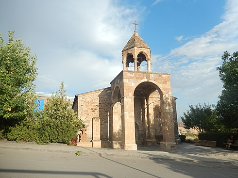
Եղեգնաձորի Սուրբ Աստվածածին (կամ Սուրբ Սարգիս) եկեղեցին՝ Վայոց ձորի թեմի առաջնորդի նստավայրը։
Բնակչության ճնշող մեծամասնությունը քրիստոնյա է և իրեն համարում է Հայաստանյան առաքելական սուրբ եկեղեցու հետևորդ։ Մարզում բնակվում են նաև Եհովայի վկաներ, ինչպես նաև Հայ ավետարանական և ռուս ուղղափառ եկեղեցիների հետևորդներ։ Հայ առաքելական եկեղեցու հավատացյալների հոգևոր պահանջմունքները բավարարելու նպատակով մարզում 2010 թվականից գործում է Հայաստանյանց առաքելական սուրբ եկեղեցու Վայոց ձորի թեմը, որի առաջնորդության ներքո են գտնվում 10 եկեղեցիներ, 5 վանքեր և վանական համալիրներ և 2 մատուռներ։ Վայոց ձորի թեմի առաջնորդը Գերաշնորհ Տեր Աբրահամ արքեպիսկոպոս Մկրտչյանն է, որի աթոռանիստը Եղեգնաձորի Սուրբ Աստվածածին եկեղեցին է։ Վայոց ձորի թեմի մյուս նշանավոր հոգևոր պաշտոններն են Նորավանքի խորհրդակատար քահանան, Եղեգնաձորի տարածաշրջանի հոգևոր հովիվը, Վայքի տարածաշրջանի հոգևոր հովիվը, Խաչիկ համայնքի հոգևոր հովիվը (ի պաշտոնե նաև ՀՀ ԶՈՒ գնդերեց) և Ջերմուկի տարածաշրջանի հոգևոր հովիվը։
Միջբարբառ
Աղավնաձոր, Արենի, Արփի (բնակչությունը 1963 թվականին տեղափոխվել է Գնիշիկից), Գնիշիկ, Գնդեվազ, Խաչիկ, Կեչուտ, Ռինդ, Չիվա (բնակչության գերակշռող մասը տեղափոխվել է Խաչիկ, Աղավնաձոր և Գնիշիկ գյուղերից), Հորս (բնակչությունը 1918-20 թվականներին տեղափոխվել է Նախիջևանի Օծոփ (Բադամլու) գյուղից), Նոր Ազնաբերդ (բնակչությունը 1988 թվականին տեղափոխվել է Նախիջևանի Ազնաբերդ (Ըզնաբերդ) գյուղից), մասամբ՝ Հերհեր (բնակչության զգալի մասը տեղափոխվել է Նախիջևանի Ճահուկ (Ջահրի) գյուղից), Զեդեա, Եղեգիս, Արարատի մարզի Եղեգնավան (Շիդլու) գյուղերի և Ջերմուկ քաղաքի բնակիչների հիմնական խոսակցական լեզուն վայոցձորյան միջբարբառն է, որը համարվում է Արարատյան բարբառի խոսվածքներից մեկը[37]։
Տեղական տոներ և ավանդույթներ
Վայոցձորցիների կենցաղի կարևոր մասն են կազմում ազգային, ավանդական և հոգևոր տոները, ինչպես նաև տարբեր ավանդույթներն ու ծիսակատարությունները։ Այստեղ, հատկապես, մեծ տոնախմբությամբ են նշվում Սուրբ ծնունդը, Զատկի տոնը, Տյառնընդառաջը և Վարդավառը[39]։ Բացի այդ, Վայոց ձորի բնակիչները յուրահատուկ ավանդույթներ ունեն հարսանիքի և մկրտության արարողությունների վերաբերյալ։ Կրոնական տոները նշվում են ինչպես ինքնաբուխ, այնպես էլ Հայ առաքելական սուրբ եկեղեցու Վայոց ձորի թեմի կազմակերպմամբ։ Ամեն տարվա հոկտեմբեր ամսի երկրորդ կիրակին տեղացիների կողմից մեծ տոնախմբությամբ նշվում է Բերքի տոնը։ Տոնախմբության կենտրոնը լինում է մարզկենտրոն Եղեգնաձորը, մինչդեռ վերջին տարիներն առանձին հանդեսներ լինում են նաև մյուս համայնքներում։ Յուրաքանչյուր համայնք տոնական շքերթի է դուրս գալիս սեփական բարիքներով ու յուրօրինակ զարդարանքներով։ Տոնախմբությունների շրջանակներում ցուցադրվում են թատերական ներկայացումներ գյուղական կենցաղից[39]։ Բերքի տոնի ընթացքում տեղացիները հյուրերին ծանոթացնում են վայոցձորյան խոհանոցին և կազմակերպում հյուրասիրություն։ Եղեգնաձորում ամֆիթատրոնում անցկացվում է համերգային ծրագիրը, իսկ հրապարակի շուրջը յուրաքանչյուր գյուղի ներկայացուցիչ առանձին տաղավար-սեղանիկներով ներկայացնում են իրենց գյուղերի բերքն ու բարիքը։ Վայոցձորյան հայտնի իրադարձություններից է նաև Գինետոնը, որը վերջին տարիներին նշվում է որպես փառատոն։ Գինու փառատոնի անցկացման վայրը Արենի համայնք է[40]։ Տարատեսակ սորտերի գինիներից բացի[40], ցուցադրվում են նաև ավանդական թխվածքներ։
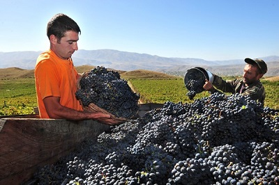
Վայոցձորյան ավանդական խոհանոցը ամբողջությամբ պարունակում է հայկական խոհանոցի դիմագծերը։ Տեղացիների սիրված ճաշատեսակներից են թթու բանջարը, կարշմը, քյալագյոշը, ղավուրմանով շորվան, նապաստակի քյուֆթան, կաքավի շորվան, տապակած լորը և ուլի խրովը[39]։
Մշակույթ
Վայոց ձորի մարզում կան բազմաթիվ մշակութային օջախներ՝ գրադարաններ, թանգարաններ, թատերասրահներ և այլն։ 2014 թվականի տվյալներով, մարզի տարածքում գործում են թվով 45 գրադարաններ, որոնցից մեկը՝ մարզային կենտրոնական, չորսը՝ քաղաքային, իսկ մնացյալ քառասունմեկը՝ գյուղական։ Ամենամեծ գրադարանը Վայոց ձորի մարզային գրադարանն է, որը գտնվում է Եղեգնաձոր քաղաքում։ Իսկ արդեն 2018 թվականի հուվարի 1-ի դրությամբ, գրադարանն ունի 65 814 պահպանության միավորից բաղկացած հավաքածու՝ գրքեր, պարբերական մամուլ, տեսալսողական նյութեր, էլեկտրոնային տեղեկատվության միջոցներ։ Գործունեության առարկան ազգային, արտասահմանյան տպագիր արտադրանքի հավաքածուի պահպանումն է, համալրումը, մշակումը, գրադարանային, տեղեկատվական, մատենագիտական սպասարկման կազմակերպումը, գրադարանների զարգացման գիտական և մեթոդական աջակցության ապահովումը։ 2013-ից ի վեր հանրային կարգավիճակ ունի նաև Վայքի գրադարանը։ Վայոց ձորում գործում են թվով չորս թանգարաններ, որոնցից երեքը գտնվում են Հայաստանի մշակույթի նախարարության, իսկ մեկը՝ Վայոց ձորի մարզպետարանի ենթակայության ներքո։ Եղեգնաձորում և Ջերմուկում գործում են Հայաստանի ազգային պատկերասրահի մասնաճյուղեր։ Եղեգնաձորի պատկերասրահի վերանորոգումից հետո մասնաճյուղի վերաբացումը համընկել է միջնադարյան մանրանկարիչ Մոմիկի ծննդյան 750-ամյակին նվիրված տոնակատարությունների հետ, և պատկերասրահում ցուցադրվել է նաև Մոմիկի և իր ժամանակակիցների աշխատանքները։ Ընդհանուր հաշվով, Վայոց ձորի պատկերասրահներում ցուցադրվում են այնպիսի արվեստագետների աշխատանքներ, ինչպիսիք են Մարտիրոս Սարյանը, Խաչատուր Իսկանդարյանը, Անատոլի Պապյանը, Հովհաննես Զարդարյանը, Արա Սարգսյանը, Էդուարդ Իսաբեկյանը և այլք։ Գլաձոր համայնքի Վերնաշեն գյուղի տարածքում գործում է «Գլաձորի համալսարան» պատմամշակութային արգելոց-թանգարանը։ Թանգարանային ցուցադրությունը կազմակերպվում է Սուրբ Հակոբ եկեղեցում և Թանահատի վանական համալիրում, նվիրված է Գլաձորի համալսարանի հիմնադրման պատմությանը, գործունեությանը, միջնադարյան Հայաստանի հոգևոր, գիտական, հասարակական կյանքում նրա ունեցած դերին ու նշանակությանը։ Վայոց ձորի մարզի կարևորագույն մշակութային ու գիտակրթական օջախներից է նաև Եղեգնաձորի երկրագիտական թանգարանը։ Թանգարանում ամփոփված են Վայոց ձոր մարզի տարածքից հայտնաբերված պատմական տարբեր ժամանակաշրջանների հնագիտական ուշագրավ նյութեր, մի շարք եզակի նմուշներ։ Եղեգնաձորի երկրագիտական թանգարանում պահպանվում է Վայոց ձորի նյութական մշակույթի ամենամեծ հավաքածուն։
Պատմամշակութային հուշարձաններ
Վայոց ձորի մարզը հարուստ է բազմաթիվ պատմամշակութային հուշարձաններով և հնագիտական վայրերով։ Վայոց
ձորի մարզի պատմության և մշակույթի անշարժ հուշարձանների պետական ցուցակում ընդգրկված է 1373 հուշարձան՝
340 պահպանական միավորով, որից 1202-ը՝ Հայաստանի պետական սեփականություն համարվող և օտարման ոչ ենթակա
պատմության և մշակույթի անշարժ հուշարձան[41]։
Վայոց ձորի մարզի բերդեր և ամրոցներ
Սմբատաբերդ (5-րդ դար)
Պռոշաբերդ (13-րդ դար)
.jpg)
Էրթիջի բերդ (12-14-րդ դարեր)
Օրբելյանների իջևանատուն (14-րդ դար)